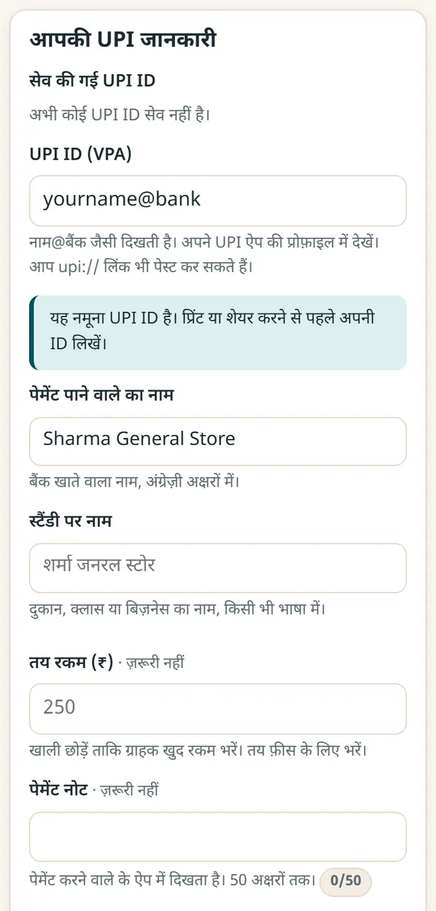
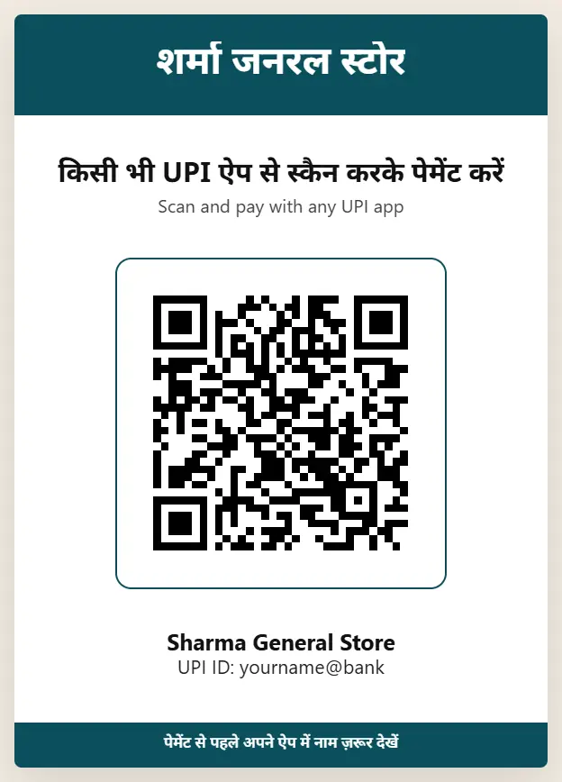

दुकान के लिए UPI QR कोड कैसे बनाएँ (मुफ़्त, प्रिंट करने लायक स्टैंडी)
आपकी UPI ID से बने QR कोड पर हर UPI ऐप से पेमेंट हो सकता है। दुकान, ट्यूशन या स्टॉल के लिए कुछ ही मिनटों में साफ़-सुथरी काउंटर स्टैंडी प्रिंट करें, और उसे QR धोखाधड़ी से बचाकर रखें।
छोटा जवाब
अपने UPI ऐप की प्रोफ़ाइल में अपनी UPI ID (name@bank जैसी) देखें। UPI QR और पेमेंट स्टैंडी खोलें, UPI ID और बैंक खाते वाला नाम लिखें, दुकान का नाम जोड़ें, स्टैंडी, टेबल टेंट या स्टिकर डिज़ाइन चुनें और “प्रिंट करें” या “PNG डाउनलोड करें” दबाएँ। काउंटर पर लगाने से पहले किसी दूसरे फ़ोन से ₹1 भेजकर जाँच लें।
6 स्टेप में अपना UPI QR बनाएँ
-
अपनी UPI ID ढूँढें
PhonePe, Google Pay, Paytm, BHIM या अपने बैंक का ऐप खोलें और प्रोफ़ाइल में UPI ID देखें। यह name@okaxis जैसी होती है, या फ़ोन नंबर के बाद @ और बैंक का नाम।
-
अपनी जानकारी लिखें
UPI QR और पेमेंट स्टैंडी खोलें। UPI ID और पाने वाले का नाम ठीक वैसा लिखें जैसा बैंक खाते में है, अंग्रेज़ी अक्षरों में। दुकान का नाम किसी भी भाषा में जोड़ें।

अपनी UPI ID, पाने वाले का नाम और दुकान का नाम लिखें। -
तय रक़म जोड़ें (ज़रूरी नहीं)
रक़म ख़ाली छोड़ें, ताकि ग्राहक ख़ुद लिखें। ट्यूशन फ़ीस जैसी तय रक़म हो, तो रक़म और “जुलाई की फ़ीस” जैसा नोट लिखें।
-
डिज़ाइन चुनें
काउंटर स्टैंडी (A5 या A4), मोड़कर रखने वाला टेबल टेंट, स्टिकर शीट या WhatsApp स्टेटस के लिए इमेज चुनें। अपना लोगो और रंग जोड़ें।

प्रिंट के लिए तैयार काउंटर स्टैंडी। -
प्रिंट या डाउनलोड करें
“प्रिंट करें” या “PNG डाउनलोड करें” दबाएँ। मोटे काग़ज़ पर प्रिंट करें या लैमिनेट करवा लें, और QR कम से कम 2.5 cm चौड़ा रखें।
-
₹1 से जाँचें
किसी दूसरे फ़ोन से ₹1 भेजें। QR इस्तेमाल करने से पहले देखें कि आपका नाम दिख रहा है और पैसा आपके बैंक में आ रहा है।
UPI QR के साथ सुरक्षित रहें
- पैसा पाने के लिए कभी QR स्कैन नहीं करना होता, न UPI PIN डालना होता है। जो ऐसा करने को कहे, वह आपको ठगने की कोशिश कर रहा है।
- अपने काउंटर का QR रोज़ देखें: ठग दुकान के QR के ऊपर अपना QR चिपका देते हैं।
- हर पेमेंट अपने ही UPI ऐप, साउंड बॉक्स या बैंक SMS में पक्का करें, ग्राहक की स्क्रीन या स्क्रीनशॉट पर नहीं।
- अगर दिन में बहुत सारे पेमेंट आते हैं, तो अपने बैंक से मर्चेंट (बिज़नेस) QR के बारे में पूछें और उसकी सुविधाएँ और शुल्क मिलाकर देखें।
नए मुफ़्त टूल और हिंदी में AI के पाठ पाएँ
हमारी ईमेल लिस्ट से जुड़ें: नए मुफ़्त ऐप, नई गाइड और AI पर हिंदी वीडियो पाठ की जानकारी आपको मिलती रहेगी। कोई स्पैम नहीं।
सिर्फ़ वयस्कों (18+) के लिए। आप कभी भी नाम हटवा सकते हैं।
हम ये टूल क्यों सुझाते हैं
- सबके लिए मुफ़्त: न विज्ञापन, न साइन-अप, न कोई पेड प्लान।
- प्राइवेट: आपकी फ़ाइलें और जानकारी आपके अपने डिवाइस पर ही रहती हैं।
- फ़ोन, लैपटॉप या स्मार्टबोर्ड पर चलते हैं, और एक बार खुलने के बाद बिना इंटरनेट भी।
- हिंदी समेत 12 भाषाओं में।
वीडियो से सीखना पसंद है? हमारे YouTube चैनल पर AI और मुफ़्त टूल्स के हिंदी पाठ देखें।
अक्सर पूछे जाने वाले सवाल
क्या UPI QR कोड बनाना मुफ़्त है?
हाँ। UPI QR कोड बस आपकी UPI ID का कोड है, जिसे हर UPI ऐप पढ़ सकता है। इसे बनाने और प्रिंट करने का कोई ख़र्च नहीं।
क्या यह QR PhonePe, Google Pay और Paytm से चलेगा?
हाँ। इसमें UPI का मानक पेमेंट लिंक है, इसलिए कोई भी UPI ऐप इसे स्कैन करके आपको पेमेंट कर सकता है।
क्या QR में तय रक़म डाल सकते हैं?
हाँ। फ़ीस या तय दाम के लिए रक़म लिखें। हर बार अलग बिल हो तो “काउंटर मोड” इस्तेमाल करें: बिल की रक़म लिखें और फ़ोन ग्राहक की ओर घुमा दें।
क्या इस ऐप में मेरी UPI ID सुरक्षित है?
आपकी UPI ID, नाम और लोगो आपके डिवाइस पर ही रहते हैं। कई QR वेबसाइटें आपका लिखा सेव कर सकती हैं; यह ऐप कुछ भी अपलोड नहीं करता।
क्या साउंड बॉक्स ज़रूरी है?
नहीं। QR उसके बिना भी चलता है। हर पेमेंट अपने UPI ऐप या बैंक SMS में देखें। साउंड बॉक्स चाहिए, तो वह आपके बैंक या UPI ऐप से मिलता है।
काम की लगी?
इसे किसी दोस्त, साथियों या अपने स्कूल के WhatsApp ग्रुप में भेजें।